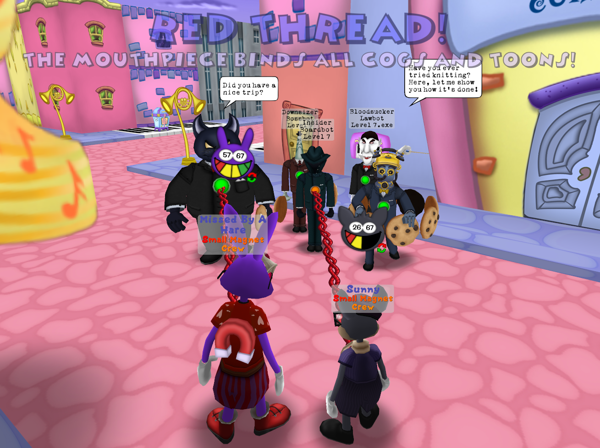

Another huge project I undertook would be another Corporate Clash Manager boss, this one called The Mouthpiece. While I didn't contribute too much to the original design at release, I helped contribute greatly to the overhaul of the fight that released with the Summer Update, or Version 1.4. We realized after release of 1.3 that the fight for the Mouthpiece was extremely lackluster, and the fight needed a huge overhaul. We ended up pursuing my idea to revamp the fight, giving players a brand new remastered experience to enjoy.

An image of the Game Design Document for Mouthpiece, highlighting some of hew new abilities that were done by me!
An image of Mouthpiece using her new ability, Red Thread.